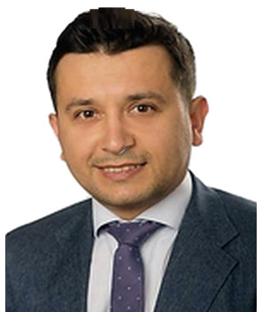

Profil
Mirzə Mütəllimov Saarland Universitet Klinikasının daxili xəstəliklər və kardiologiya bölməsində həkim-mütəxəssis və dosentdir. 2019-cu ilin iyunundan Mainz Universitetinin tədris xəstəxanası olan Klinikum Idar-Oberstein-də daxili xəstəliklər, kardiologiya və ritmologiya üzrə şöbə müdiridir. 2004–2011-ci illərdə Bakıda tibb təhsili alıb, 2013-cü ildə Almaniyada həkim lisenziyası (Approbation) alıb. 2019-cu ilin dekabrından 2024-cü ilin martınadək Köln Universitetinin doktorantı olub. Diastolik ürək çatışmazlığının diaqnostikasında EKQ-nin yeri mövzusunda dissertasiya 2024-cü ilə aiddir. Daxili xəstəliklər və kardiologiya, invaziv elektrofiziologiya, ürək çatışmazlığı və intervension kardiologiya üzrə mütəxəssis adları var.
İş təcrübəsi
Saarland Universitet Klinikası, Almaniya
1 sentyabr 2022–hazırdaHəkim-mütəxəssis və dosent
- Daxili xəstəliklər və kardiologiya
Klinikum Idar-Oberstein, Mainz Universitetinin tədris xəstəxanası, Almaniya
1 iyun 2019–hazırdaŞöbə müdiri; daxili xəstəliklər, kardiologiya və ritmologiya üzrə mütəxəssis
- Kardiologiya və pnevmologiya
Gütersloh şəhər klinikası, Münster Universitetinin tədris xəstəxanası, Almaniya
September 2016–June 2019Həkim-rezident
- İnvaziv kardiologiya, elektrofiziologiya və ritmologiya
Bielefeld Bethel Klinikası, Bielefeld Universitet Klinikası, Almaniya
June 2012–July 2016Həkim-rezident
- Kardiologiya, nefrologiya və diabetologiya
Mərkəzi Klinik Xəstəxana, Bakı, Azərbaycan
August 2011–May 2012Kardioloq
- Kardiologiya və elektrofiziologiya
Elmi-Tədqiqat Kardiologiya İnstitutu, Bakı, Azərbaycan
August 2007–May 2010Orta tibb işçisi
- İntensiv kardiologiya
Təhsil
Dr. med.
December 2019–March 2024Stellenwert des EKGs in der Diagnostik der diastolischen Herzinsuffizienz. Universität zu Köln, 2024. https://kups.ub.uni-koeln.de/72620/
Köln Universiteti, Köln, Almaniya
Magistratura
2022–hazırdaSəhiyyənin idarə edilməsi
Erlangen-Nürnberg Universiteti, Almaniya
Mütəxəssis
2024İntervension kardiologiya
Mütəxəssis
2024Ürək çatışmazlığı
Mütəxəssis
2020İnvaziv elektrofiziologiya və aktiv ürək ritm cihazlarının implantasiyası
Mütəxəssis
2019Daxili xəstəliklər və kardiologiya
Approbation
2013Almaniyada həkim lisenziyası
Əsas tibb təhsili və internatura
2004–2011Azərbaycan Beynəlxalq Universiteti və Azərbaycan Tibb Universiteti, Bakı, Azərbaycan
Lisey attestatı
September 1993–July 2004Fizika, riyaziyyat və informatika
Respublika liseyi, Azərbaycan
Nəşrlər
Rəylənmiş (peer-reviewed) jurnal məqalələri
1. Mutallimov, M.; Guliyeva, S.; Gassanov, N. The role of cardiac contractility modulation in the management of ischemic cardiomyopathy. Azerbaijan Journal of Cardiology, 2022, 1(21), 44–49.
2. Mutallimov, M.; Er, F.; Gassanov, N. Device fracture as a potential complication of a left ventricular microaxial pump catheter: a case report. European Heart Journal Case Reports, 2022, 6(8), ytac335. https://doi.org/10.1093/ehjcr/ytac335. PMID 36004047.
3. Gassanov, N.; Mutallimov, M.; Caglayan, E.; Erdmann, E.; Er, F. ECG as a risk stratification tool in patients with wearable cardioverter-defibrillator. Journal of Cardiology, 2022, 80(6), 573–577. https://doi.org/10.1016/j.jjcc.2022.08.001.
4. Gassanov, N.; Raghavan, M.; Mutallimov, M.; Zagidullin, N.; Er, F. Diabetic cardiomyopathy: pathogenesis and clinical implications. The Cardiologist, 2017, 1, 10–19.
Konfrans məqalələri və tezisləri
1. Mutallimov, M.; Kalyani, M.; Ekosso Ejangue, L.; Deelawar, S.; Manegold, J. C.; Lamp, B.; Israel, C. W. Woran versterben Patienten mit Herzinsuffizienz und kardialer Resynchronisationtherapie (CRT)? 81. Jahrestagung der Deutschen Gesellschaft für Kardiologie, Mannheim, 2015. Vortrag V1230.
2. Linzbach, S. P.; Mutallimov, M.; Deelawar, S.; Kalyani, M.; Ekosso Ejangue, L.; Mirzazadeh, M.; Steidl, A.; Hohnloser, S.; Israel, C. W. Cause-specific mortality in patients undergoing CRT-D therapy in daily clinical practice: long-term follow-up of 392 consecutive patients. Heart Rhythm, 2014, 11(5), May supplement, S400, PO04-180. Heart Rhythm 2014, San Francisco.
3. Linzbach, S. P.; Mutallimov, M.; Deelawar, S.; Kalyani, M.; Ekosso Ejangue, L.; Mirzazadeh, M.; Steidl, A.; Hohnloser, S.; Israel, C. W. De-novo versus upgrade cardiac resynchronization therapy: results from a prospective observational study. ESC Congress, Barcelona, 2014. Poster FP 564.